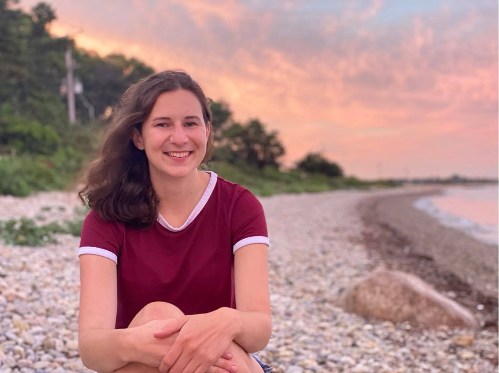
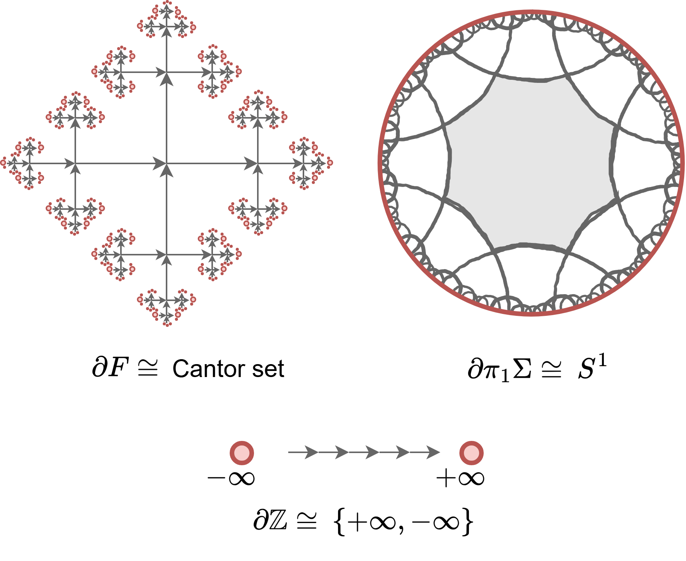
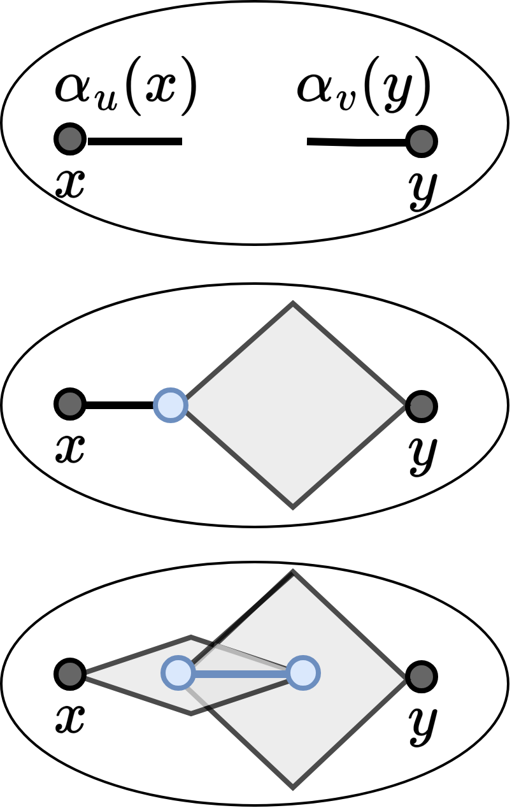
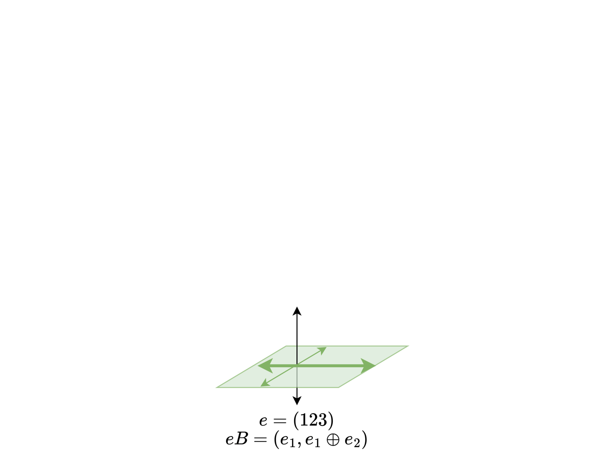
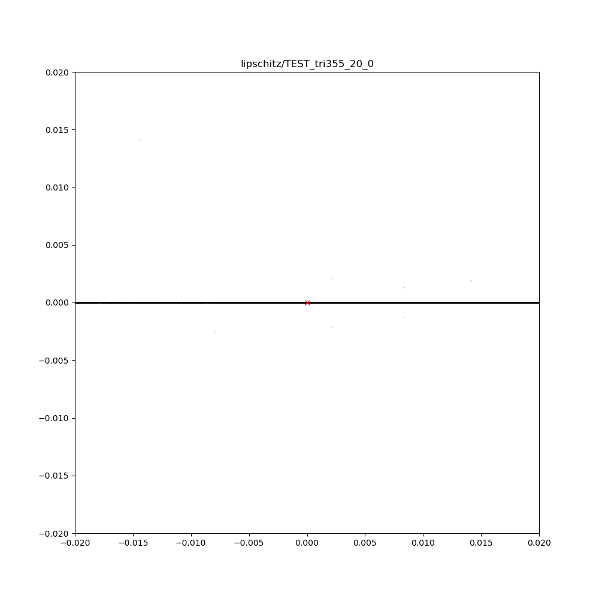
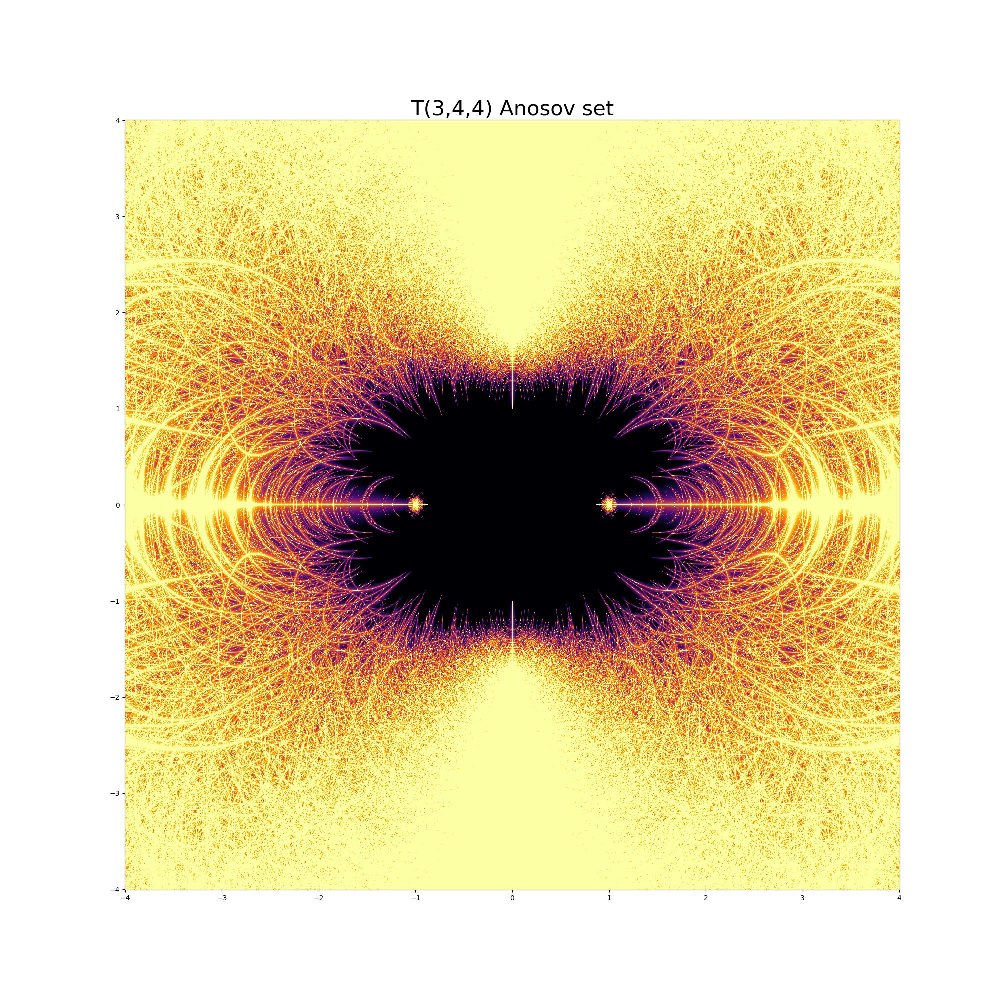
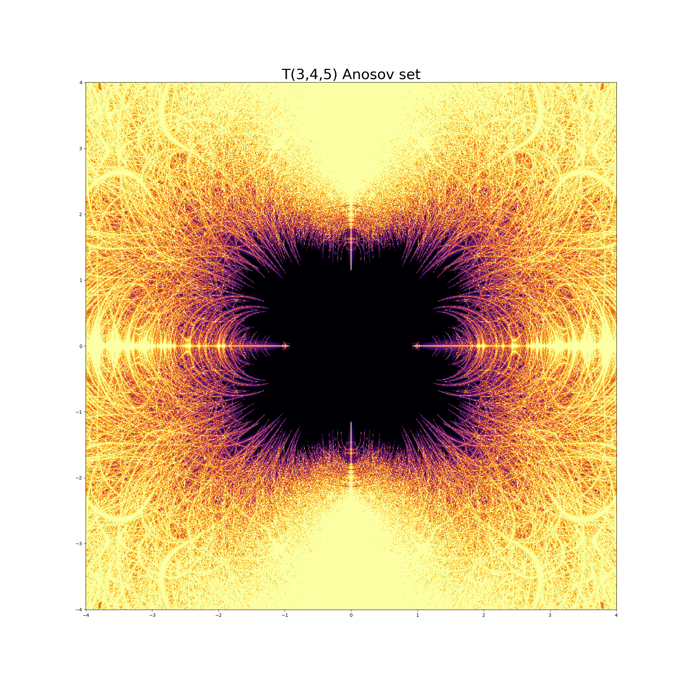
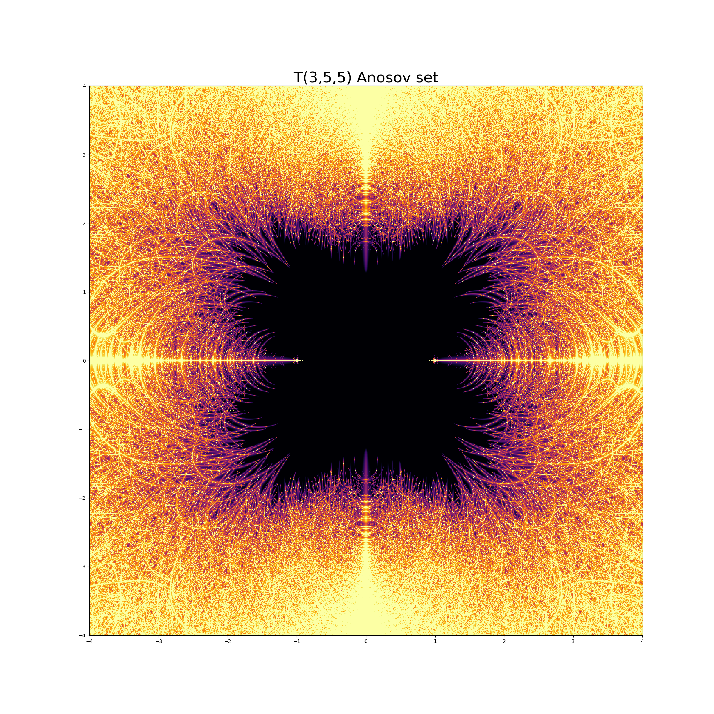
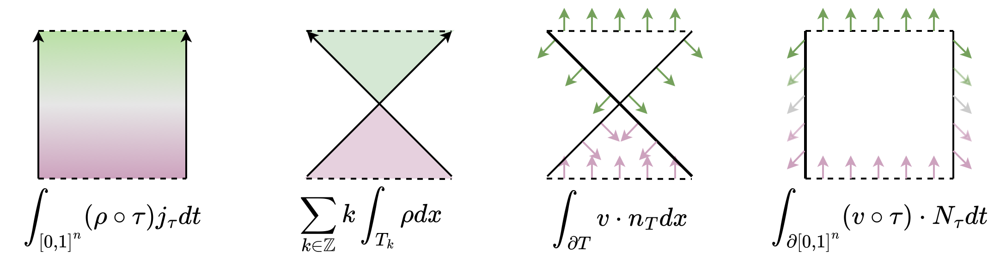
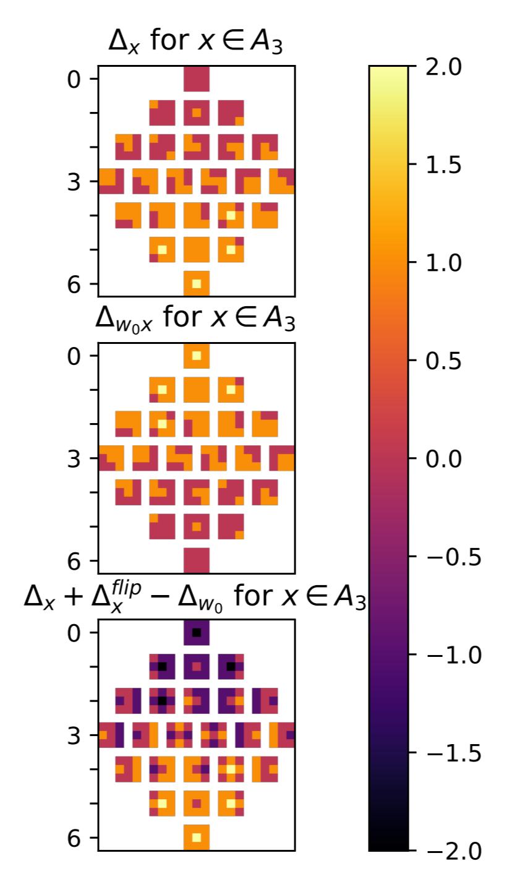

Jennifer Vaccaro
Contact: jlynnvaccaro at gmail dot com
In October 2026, I defended my doctoral thesis ``Hyperconvex representations and Richardson varieties,"
advised by Emily Dumas.
I'm currently on the job market, and feel free to reach out with opportunities. <\p>

Teaching
As of Fall 2026, I'm an instructor of record for Math 088, the workshop for UIC's foundational algebra course.
I have also advised undergraduate reading projects through the
and math modeling projects for COMAP MCM at UIC, an undergraduate math modeling competition.
Past Teaching
- Fall 2026: Math 088 Intermediate Algebra Workshop
- Summer 2026: Summer Enrichment Mathematics Workshop (intensive prep for math placement exam.)
- Spring 2025: Teaching Assistant Coordinator (covering for TAs in Math, Stat, and MCS courses)
- Spring 2024: Stat 101 Introduction to Statistics
- Spring 2022: Math 180 Calculus I
- Fall 2021: Math 220 Differential Equations
- Spring 2021: MCS 275 Programming Tools and File Management
- Fall 2020: MCS 260 Introduction to Computer Science
- Spring 2016: Probability and Statistics (Olin College of Engineering)
- Fall 2016: Introduction to Complex Variables (Olin)
Workshops and conferences
Here are some recent (and upcoming) events where we may have met.
- January 2025: Joint Mathematics Meetings (AMS-MAA, Seattle, WA) Website
- October 2024: 20 years of Anosov representations (MPI-MIS, Leipzig, Germany) Website Workshop talk: Symmetric spaces in higher rank
- July 2024: Anosov representations and higher Teichmüller theory (AMS-UMI, Palermo, Italy) Website Talk: Anosov representations of triangle reflection groups in rank 2 (slides)
- July 2024: Moving to higher rank: from hyperbolic to Anosov – A conference in honor of Dick Canary (Centraro, Italy) Website
- April 2024: Graduate student topology and geometry conference (Michigan State, Lansing, MI) Website
- July 2023: Group actions and low-dimensional topology (ICMAT, El Barco de Avila, Spain) Website
- June 2023: Homogeneous dynamics and geometry in higher-rank Lie groups (IHES, Paris, France) Website
- May 2023: Higgs bundles, character varieties, and higher Teichmuller space (ICMAT, Miraflores de la Sierra, Spain) Website
- April 2022: Graduate student topology and geometry conference (Georgia Tech, Atlanta, GA) Website
Research
My research focuses on Anosov representations of hyperbolic groups `\Gamma` (e.g. a surface group) into complex semisimple Lie groups `G` (e.g. `SL_n\mathbb{C}`).
In particular, I'm interested in distinguishing connected Anosov subsets in `Hom(\Gamma, G)` using the dynamics of representations acting on the flag variety.
I enjoy creating visualizations by writing software and using tools like here.
-->
Here are pictures of some ideas that I have been thinking about recently.
- Quasi-Fuchsian representations are topologically conjugate. This means that there is a continuous, equivariant map from CP^1 to CP^1 which matches the dynamics of one Fuchsian representation to another.
.png)
- Examples of hyperbolic groups (e.g. free group, surface group, and integers) and their boundaries (e.g. Cantor set, circle, and two points).
.png)

- Richardson varieties are (nonempty) intersections of Schubert varieties a_u(x) and a_v(y) based at transverse flags x and y. The dimension depends only on u and v, elements in the Weyl group.

- Schubert cells of the form `BwB` partition the flag variety `F = G/B`. The dimension of each cell is the length of `w` in the Weyl group.
.gif)
- Given a basis of F(C^n) and base flag (e_1, e_1 \oplus e_2, ...), the group of permutations acts on the base flag by permuting the basis vectors. The flag (e_n, e_{n-1} \oplus e_n, ...) is transverse to the base flag.

- Hyperconvex limit curves: For hyperconvex representations, the projection of the limit curve is injective. As we perturb the T(3,5,5) representation in the SL(3,C) character variety towards the Anosov boundary, this projected limit curve appears to remain injective.

- Visualizations of the C-Hitchin component for T(3,4,4), T(3,4,5), and T(3,5,5) representations in SL(3,C). Black means "likely Anosov" and lighter colors mean "not Anosov." See these slides for more context.



- Triangle reflection groups act on H^2 by isometries with fundamental domain a 2-orbifold triangle. Though these groups have torsion, they still admit nice representations into Lie groups.
.png)
- In ALE hydrodynamics remap, you can compute the mass flux through a swept region in several equivalent ways.

- The colored squares are integer matrices related to the Bruhat order on A_3, which is the symmetric group on four letters.
